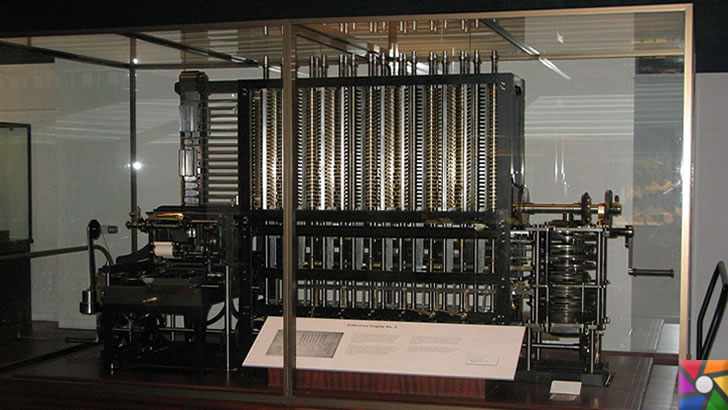
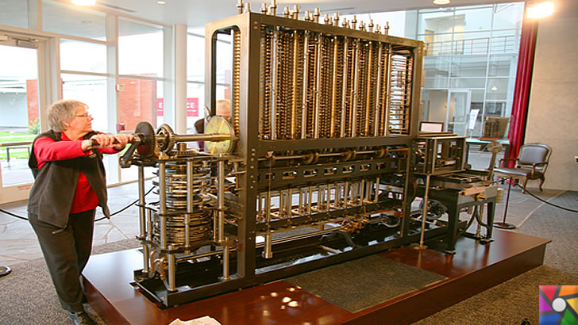
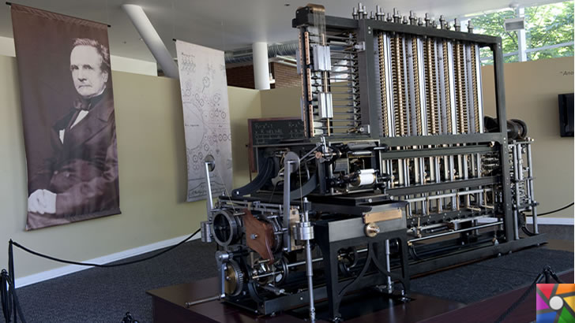
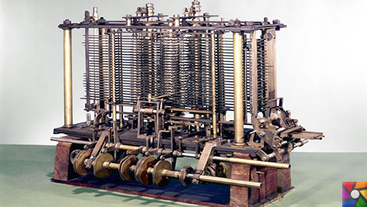

| “Bilgisayarın Babası” Charles Babbage Kimdir? Hayatı ve Biyografisi |
Charles Babbage’in Hayatı | Biyografisi |
Charles Babbage’in İcatları |
1. Fark motoru (Difference Engine) – Charles Babbage |
2. Analitik motoru (Analytical Engine) – Charles Babbage |
3. İkinci Fark Motoru – Charles Babbage |
| Charles Babbage, (Doğum Tarihi: 26 Aralık 1791 | Ölüm Tarihi: 18 Ekim 1871) tarihleri arasında yaşamış önemli bir İngiliz matematikçi, analitik filozof, makine mühendisi ve programlanabilir bilgisayar fikrini ortaya atan bilgisayarın öncü mucitlerindendir. Onun bilgisayar tarihinde adı “bilgisayarın babası” olarak anılmaktadır. |
Charles Babbage’in Babası Benjamin Babbage, Teignmouth ve Betsy Plumleigh Babbage olarak Bitton Emlak sahiplerinden olup, zengin bir işadamıydı. |
Charles Babbage, 1830’ların ortalarında çözümleyici makine diye adlandırılan ve çağdaş sayısal (dijital) bilgisayarın öncüsü olan aygıtın tasarımını gerçekleştirdi |
Charles Babbage, 14 Haziran 1822 tarihinde Royal Astronomical Society de fark motoru olarak adlandırılan ve “astronomik ve matematiksel tabloların hesaplama makine uygulaması” Başlıklı bir yazısında bu yönteme farklar yöntemi dedi, bu mantıkta çalışan bir fark motoru yapacağını açıkladı. |
Babbage, fark motoru tamamlamadan geliştirilmiş bir hesaplama motoru hakkında düşünmeye başladı. 1833 ve 1842 yılları arasında hesap kitap değil, polinom denklemler ile ilgili sadece olanları yapmak programlanabilir olacak bir makine oluşturmak için çalıştı. |
Ekim 1846 ve Mart 1849 tarihleri arasında Charles Babbage analitik motoru elde edilen bilgi kullanarak ikinci fark motoru tasarlamaya başladı. |
| İlk sistem mühendisi ve ilk sibernetikçi ve elektronikçi Bilgisayarın babası El Cezeri’dir; oysa bilgisayarın babası yanlış olarak ingiliz matematikçisi Charles Babbage olarak bilinir. |
Charles Babbage temel eğitimlerini birçok elit okullar ve özel öğretmenlerden eğitim aldı. Küçükken başından geçen tehlikeli hastalık onu eğitiminden uzaklaştırdı. Kötü sağlık durumu bir süre için özel bir öğretim için onu geri zorladı. Sonra, nihayet Rahip Stephen Freeman tarafından yönetilen bir akademiye girdi.
Charles Babbage burada zengin matematik arşiviyle tanıştı.Matematiği çok sevdi. O akademiden ayrıldıktan sonra iki özel eğitimde aldı. Ardından Cambridge Üniversitesine kabul edildi. |
Bu aygıtta delikli kartlardan gelen komutlar uyarınca herhangi bir aritmetik işlemin yapılabilmesi öngörülüyordu. |
Toplum fikri onayladı ve hükümetin kendisine 1823 yılında, bu projeye 1500 Pound vermiştir. Charles Babbage bir atölye kurdu maddi eksikliği sebebi evinde bir odayı dönüştürdü.Bu işlerde Joseph Clemento hükümet ile bağlantısı oldu. |
Şimdiki bilgisayara benzeyen CPU ve RAM ilişkisi ilk defa Babbage tarafından düşünüldü. 1842 yılında hükümet desteğinin bitmesi ile bu projede yarım kaldı. |
8000 parça kullanıldı ve ilkine göre 2,5 kat daha yüksekti. Mekanik mühendislik harikası oldu. Fakat geliştirmek için hiç uğraşmadı |
| Charles Babbage, adını Analytical Engine (Çözümlemeli veya analitik makine) olarak adlandırdığı, ilk tam yazılımlanabilir makinesel bilgisayarı kavramsallaştırıp bu makineyi tasarladı. Çalışmalarının bir kısmı Londra Bilim Müzesi’nde sergilenmektedir. Mekanik olarak çalışabildiği sonradan kanıtlanmış bir hesap makinesi geliştirmiştir. Yaptığı hesap makinesini günümüz bilgisayarlarının geliştirilmesinde en önemli katkılarda bulunduğu kabul edilir. |
1812 yılında, J.Herschel, G.Peacock ve diğer arkadaşlar ile Analitik Derneği kurmaya karar verdi. Hesaplamalarda insan hatasını kaldırmak için mekanik bir yöntem üzerinde çalışmaya başlandı.
1814 yılında, Charles Babbage Teignmouth, Devon bölgesindeki St. Michael Kilisesinde Georgiana Whitmore ile evlendi. Londra’da Portland Place’de, huzur içinde yaşadılar. |
Ayrıca sayıların saklanabileceği bir bellek birimi, işlemlerin art arda ve sırasıyla yapılmasını sağlayacak ardışık kontrol ve bugünkü bilgisayarın daha birçok temel öğesi makinede yer alacaktı. |
1827 yılında hayatında yaşadığı ölüm haberleri bir süre hayattan kopardı. Zaten hassas olan vücudu çocukluğunda da kırılgan hastalıklarla uğraşmıştı ve eğitimlerinden hep uzak kalmıştı. Bir anda gelen babası, eşi ve çocuğunu aynı sene kaybetmesiyle Fark Motoru projesine ara verildi ve farklı ülkelere giderek seyahat etti. |
--------- |
Çünkü kişisel problemler, yaşam biçimi, kırılgan vücudu, maddi kaynak yetersizliğinden dolayı yetersiz kaldı |
| 1991 Yılında, Charles Babbage’nin özgün çalışmalarına sadık kalarak onun Fark makinesi diye adlandırdığı cihaz tamamlanmış ve harika bir şekilde çalıştığı görülmüştür. |
1814 yılında, Charles Babbage Teignmouth, Devon bölgesindeki St. Michael Kilisesinde Georgiana Whitmore ile evlendi. Londra’da Portland Place’de, huzur içinde yaşadılar.
1822 yılında Sir H. Davy için yazdığı bir mektupta bir hesaplama motorunun ana ilkeleri tartışılmıştır. |
Ama çözümleyici makine hiçbir zaman tamamlanamadı. Babbage’ın tasarımı 1937’de kendisine ait not defteri bulununcaya dek hatırlanmamıştı. |
İtalya’da bir süre yaşadı. İtalya’da zamanın en iyi Matematikçisi ünvanı verildi. İngiltere’ye döndüğünde Fark motoru hakkında verilen paraların haksız olduğu, çalışmaların boşa olduğu söylentileri başlamıştı. Fakat John Herschel ve Royal Society, kamuya motoru savundu.
İngiliz Hükümeti 24 Şubat 1830 tarihinde, 1500 Pound desteğini 3000’e çıkardı. Babbage iki katlı, evinin arkasında 50 metrelik uzun atölye inşa etmişti. Bu aydınlatma için bir cam tavan ve makine içeren bir yanmaz, tozsuz bir odası vardı. |
-------- |
Babbage’ın doğumunun 200. yıldönümünü kutlamak için 1985-1991 tarihlerinde İkinci fark motoru da yaptırılmıştır |
| Charles Babbage ‘ın zamanında, matematiksel tablolar çok yüksek oranda işlem hataları içeriyorlardı. Cambridge’te iken insanlar tarafından hesaplanarak hazırlanan bu tabloların ne kadar hatalı yapıldığını görerek, kendini insandan kaynaklı hatalara engel olabileceği bir hesap makinesinin tasarımına adamıştır. 1822 yılında, polinom işlevlerin (fonksiyonların) değerlerinin hesaplanmasını olanaklı kılacak, Fark makinesi adını verdiği aygıtın yapımına başlamıştır. |
1827 yılında babası, eşi ve oğullarından birini aynı sene içinde kaybetti. Hayatını geri kalan bölümünü bilime adadı ve 1871 yılında yaşamını yitirdi. |
----------------- |
Destekçisi Joseph Clemento, sık sık bürokrasinin ödeme takvimi gerisinde kaldığı zaman kendi cebinden ödemek zorunda kaldı. Babbage’ın bu projeye koyduğu 6000 Pound ile toplamda 23.000 Pound harcanmıştı, fakat hala makine bitmemişti. 1842 yılına kadarda proje desteği Hükümet tarafından bırakıldı.
Fark Makinesi, 2,5 metre uzunluğunda, 15 bin ton ağırlığında, 25 bin parçadan oluşuyordu. Mali kaynak var iken, tamamlanmadığı görülmektedir.
Yıllar sonra 1989 ile 1991 yılında bu proje o zamana göre değerlendirildi. Tamamlanan makine 31 basamağa kadar çalıştığı görüldü. O zamanın şartlarına göre harika bir makineydi. Günümüzde halen Londra Bilim Müzesi’nde sergilenmektedir. |
----- |
11 metre genişliğinde, 7 metre yüksekliğinde ve 2,6 ton ağırlığında olan cihaz çalıştırılmıştır. |




Charles Baggage video
Giriş Sayfası